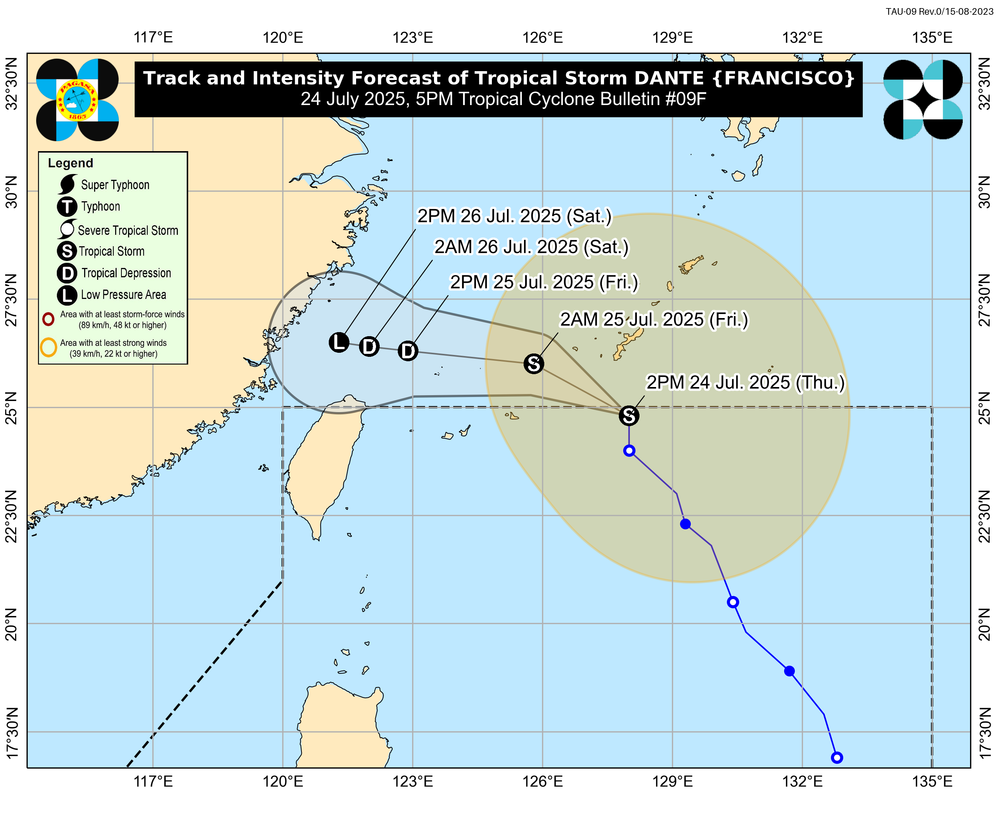
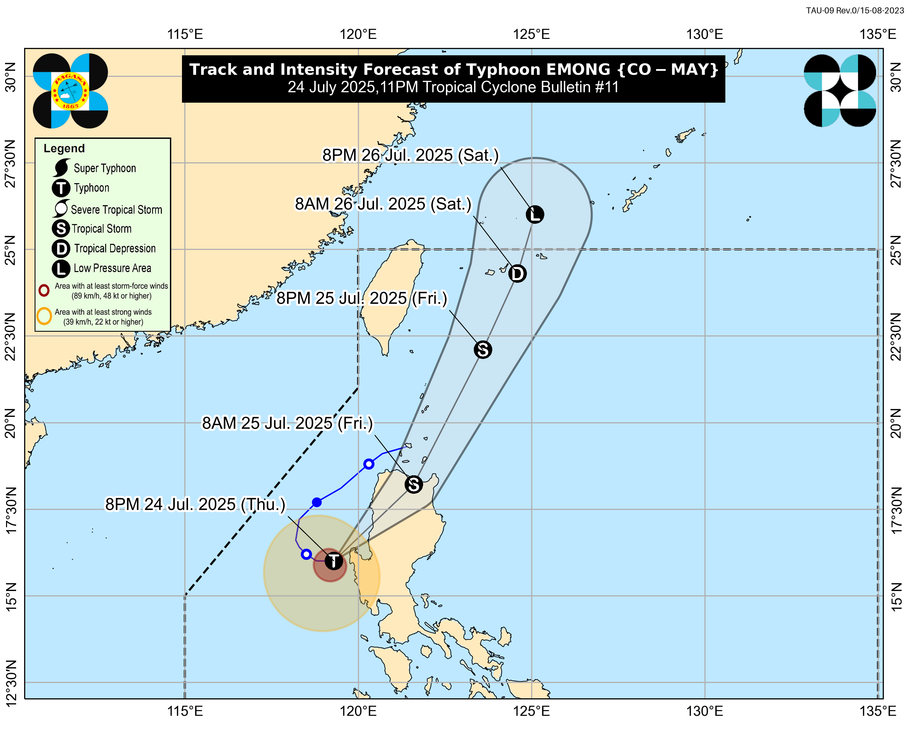

Formed in 2009, the Archive Team (not to be confused with the archive.org Archive-It Team) is a rogue archivist collective dedicated to saving copies of rapidly dying or deleted websites for the sake of history and digital heritage. The group is 100% composed of volunteers and interested parties, and has expanded into a large amount of related projects for saving online and digital history.
Formed in 2009, the Archive Team (not to be confused with the archive.org Archive-It Team) is a rogue archivist collective dedicated to saving copies of rapidly dying or deleted websites for the sake of history and digital heritage. The group is 100% composed of volunteers and interested parties, and has expanded into a large amount of related projects for saving online and digital history.

Tropical Storm "Dante"
Issued at 05:00 pm, 23 July 2025
(Valid for broadcast until the next advisory to be issued at 11:00 PM today)
“DANTE” MAINTAINS ITS STRENGTH AS IT ACCELERATES NORTH NORTHWESTWARD.
- HAZARDS AFFECTING LAND AREAS
- Heavy Rainfall Outlook
- Refer to Weather Advisory No. 32 issued at 11:00 AM today for the heavy rainfall outlook due to the Southwest Monsoon enhanced by DANTE and EMONG.
- Severe Winds
- The enhanced Southwest Monsoon will bring strong to gale-force gusts over the following areas (especially in coastal and upland areas exposed to winds):
- Today: Zambales, Bataan, Bulacan, Aurora, Metro Manila, CALABARZON, Bicol Region, MIMAROPA, Visayas, Zamboanga del Norte, Misamis Occidental, Lanao del Norte, Camiguin, Dinagat Islands, Davao Occidental, and Davao Oriental.
- Tomorrow (24 July): Central Luzon, Metro Manila, CALABARZON, Bicol Region, MIMAROPA, Visayas, Zamboanga del Norte, Misamis Occidental, Lanao del Norte, Camiguin, Davao Occidental, and Davao Oriental.
- Friday (25 July): Ilocos Region, Cordillera Administrative Region, Central Luzon, Metro Manila, Bicol Region, MIMAROPA, Visayas, Zamboanga del Norte, Misamis Occidental, Lanao del Norte, Camiguin, Davao Occidental, and Davao Oriental.
- HAZARDS AFFECTING COASTAL WATERS
- 24-Hour Sea Condition Outlook
- Up to rough seas over the following coastal waters:
- Up to 3.5 m: The western seaboards of Batanes, Babuyan Islands, Zambales, Bataan, and Lubang Island.
- Up to 3.0 m: The seaboards of Kalayaan Islands; the northern seaboard of Ilocos Norte; the western seaboards of Occidental Mindoro and Calamian Islands.
- Mariners of small seacrafts, including all types of motorbancas, are advised not to venture out to sea under these conditions, especially if inexperienced or operating ill-equipped vessels.
- Up to moderate seas over the following coastal waters:
- Up to 2.5 m: The remaining seaboards of Babuyan Islands, Batanes, and Ilocos Region; the southern seaboard of Bataan; the western seaboards of Cavite, Batangas, and Palawan.
- Up to 2.0 m: The seaboards of Camarines Norte, Oriental Mindoro, Marinduque, and Romblon; the northern and eastern seaboards of Catanduanes and Northern Samar; the eastern seaboards of Albay, Sorsogon, Surigao del Sur, and Davao Oriental; the western seaboard of Masbate; the southern seaboard of Quezon; the remaining seaboards of Batangas, Occidental Mindoro, ad Palawan; the northern seaboard of Camarines Sur.
- Mariners of motorbancas and similarly-sized vessels are advised to take precautionary measures while venturing out to sea and, if possible, avoid navigation under these conditions.
- TRACK AND INTENSITY OUTLOOK
- DANTE is forecast to move generally northwestward over the Philippine Sea for the next 24 hours and move towards the Ryukyu Islands and then East China Sea. On the track forecast, DANTE may exit the Philippine Area of Responsibility (PAR) tomorrow (24 July) afternoon or evening.
- DANTE has reached Tropical Storm intensity at 8:00 AM today. Further intensification into a severe tropical storm remains less likely but is not ruled out.

Location of Eye/center
The center of the eye was estimated based on all available data 835 km East Northeast of Extreme Northern Luzon (22.2 °N, 129.8 °E )
Movement
Moving North Northwestward 25 km/h
Strength
Maximum sustained winds of 65 km/h near the center and gustiness of up to 80 km/h
Forecast Position
- Jul 24, 2025 02:00 AM - 735 km East Northeast of Itbayat, Batanes
- Jul 24, 2025 02:00 PM - 695 km Northeast of Itbayat, Batanes
- Jul 25, 2025 02:00 AM - 640 km North Northeast of Itbayat, Batanes (OUTSIDE PAR)
- Jul 25, 2025 02:00 PM - 640 km North Northeast of Itbayat, Batanes (OUTSIDE PAR)
- Jul 26, 2025 02:00 AM - 680 km North of Itbayat, Batanes (OUTSIDE PAR)
- Jul 26, 2025 02:00 PM - 745 km North of Itbayat, Batanes (OUTSIDE PAR)
Wind Signal
No Tropical Cyclone Wind Signal
-
Considering these developments, the public and disaster risk reduction and management offices concerned are advised to take all necessary measures to protect life and property. Persons living in areas identified to be highly or very highly susceptible to these hazards are advised to follow evacuation and other instructions from local officials. For heavy rainfall warnings, thunderstorm/rainfall advisories, and other severe weather information specific to your area, please monitor products issued by your local PAGASA Regional Services Division.
Tropical Cyclone Bulletin Archive
Tropical Storm "Emong"
Issued at 05:00 pm, 23 July 2025
(Valid for broadcast until the next advisory to be issued at 11:00 PM today)
“EMONG” INTENSIFIES INTO A TROPICAL STORM AS IT MOVES SOUTHWESTWARD OVER THE WEST PHILIPPINE SEA
- HAZARDS AFFECTING LAND AREAS
- Heavy Rainfall Outlook
- Refer to Weather Advisory No. 33 issued at 5:00 PM today for the heavy rainfall outlook due to the Southwest Monsoon enhanced by DANTE and EMONG.
- Severe Winds
- The enhanced Southwest Monsoon will bring strong to gale-force gusts over the following areas (especially in coastal and upland areas exposed to winds):
- Today: Central Luzon, Metro Manila, CALABARZON, Bicol Region, MIMAROPA, Visayas, Zamboanga del Norte, Misamis Occidental, Lanao del Norte, Camiguin, Dinagat Islands, and Davao Oriental.
- Tomorrow (24 July): Central Luzon, Metro Manila, CALABARZON, Bicol Region, MIMAROPA, Visayas, Zamboanga del Norte, Misamis Occidental, Lanao del Norte, Camiguin, and Davao Oriental.
- Friday (25 July): Isabela, Quirino, Nueva Vizcaya, Central Luzon, Metro Manila, Bicol Region, MIMAROPA, Visayas, Zamboanga del Norte, Misamis Occidental, Lanao del Norte, Camiguin, and Davao Oriental.
- HAZARDS AFFECTING COASTAL WATERS
- A Gale Warning is in effect over the western seaboard of Northern Luzon. Refer to Gale Warning No. 1 issued at 5:00 PM today.
- 24-Hour Sea Condition Outlook
- Up to very rough seas over the following coastal waters:
- Up to 6.0 m: The western seaboard of Pangasinan.
- Up to 4.5 m: The western seaboards of Zambales and Bataan.
- Sea travel is risky all types or tonnage of vessels. All mariners must remain in port or, if underway, seek shelter or safe harbor as soon as possible until winds and waves subside.
- Up to rough seas over the following coastal waters:
- Up to 4.0 m: The seaboard of Lubang Island.
- Up to 3.5 m: The western seaboards of Ilocos Sur, La Union, Cavite, Batangas, Occidental Mindoro, and Calamian Islands.
- Up to 3.0 m: The seaboards of Batanes, Marinduque, and Kalayaan Islands; the western seaboard of Babuyan Island; the southern seaboard of Quezon; the eastern seaboard of Oriental Mindoro; the northern and western seaboards of Romblon.
- Mariners of small seacrafts, including all types of motorbancas, are advised not to venture out to sea under these conditions, especially if inexperienced or operating ill-equipped vessels.
- Up to moderate seas over the following coastal waters:
- Up to 2.5 m: The remaining seaboards of Babuyan Islands, Bataan, Cavite, and Calamian Islands; the seaboard of Isabela, Pampanga, Bulacan, Metro Manila, and Surigao del Sur; the western seaboards of Bicol Region, mainland Palawan, and Antique; the eastern seaboard of Davao Oriental.
- Up to 2.0 m: The seaboard of mainland Cagayan, Aurora, Aklan, and Northern Samar; the remaining seaboard of Bicol Region, Batangas, Occidental Mindoro, Oriental Mindoro, Romblon, and Palawan; the southwestern seaboard of Negros Occidental and Iloilo; the western seaboard of Guimaras.
- Mariners of motorbancas and similarly-sized vessels are advised to take precautionary measures while venturing out to sea and, if possible, avoid navigation under these conditions.
- TRACK AND INTENSITY OUTLOOK
- EMONG is forecast to move generally southwestward tonight before looping over the West Philippine Sea tomorrow morning through afternoon (24 July) due to its interaction with Tropical Storm DANTE. Afterwards, it will move generally northeastward while accelerating. On the track forecast, EMONG will make landfall over Ilocos Sur, La Union, or Pangasinan tomorrow evening or on Friday (25 July) early morning. This tropical cyclone will emerge over the Luzon Strait on Friday afternoon after crossing the mountainous terrain of Northern Luzon.
- EMONG is forecast to continuously intensify and may reach severe tropical storm category before making landfall on Friday. Its passage over Northern Luzon will weaken EMONG into a tropical storm.

Location of Eye/center
The center of Tropical Storm EMONG was estimated based on all available data 150 km West Northwest of Sinait, Ilocos Sur (18.2 °N, 119.1 °E )
Movement
Moving Southwestward at 20 km/h
Strength
Maximum sustained winds of 65 km/h near the center and gustiness of up to 80 km/h
Forecast Position
- Jul 24, 2025 02:00 AM - 210 km West Northwest of Bacnotan, La Union
- Jul 24, 2025 02:00 PM - 180 km West of Bacnotan, La Union
- Jul 25, 2025 02:00 AM - Over the coastal waters of Santiago, Ilocos Sur
- Jul 25, 2025 02:00 PM - 135 km East Northeast of Calayan, Cagayan
- Jul 26, 2025 02:00 AM - 415 km East Northeast of Itbayat, Batanes
- Jul 26, 2025 02:00 PM - 795 km East Northeast of Itbayat, Batanes
- Jul 27, 2025 02:00 PM - 1,200 km Northeast of Extreme Northern Luzon (OUTSIDE PAR)
Wind Signal
(Areas with TCWS)
{kind=link}
Tropical Cyclone Wind Signal no.  |
|
|---|---|
| Affected Areas |
|
| Meteorological Condition |
|
| Impact of the Wind |
|
| Precautionary Measures |
|
| What To Do |
|
-
Considering these developments, the public and disaster risk reduction and management offices concerned are advised to take all necessary measures to protect life and property. Persons living in areas identified to be highly or very highly susceptible to these hazards are advised to follow evacuation and other instructions from local officials. For heavy rainfall warnings, thunderstorm/rainfall advisories, and other severe weather information specific to your area, please monitor products issued by your local PAGASA Regional Services Division.
Tropical Cyclone Bulletin Archive